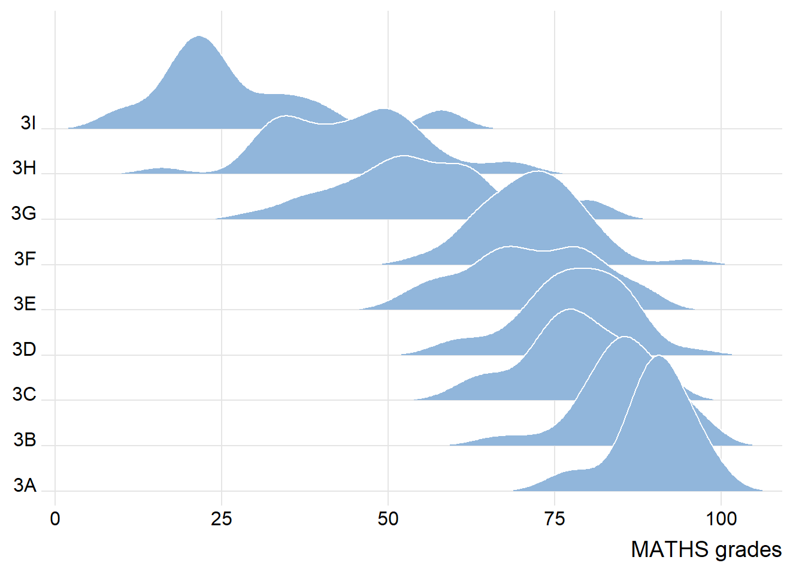
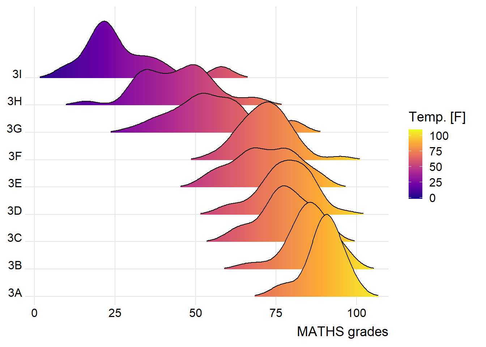
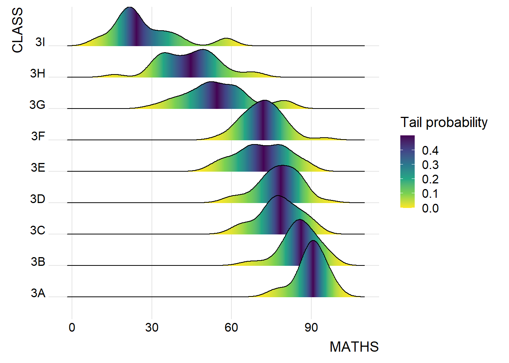
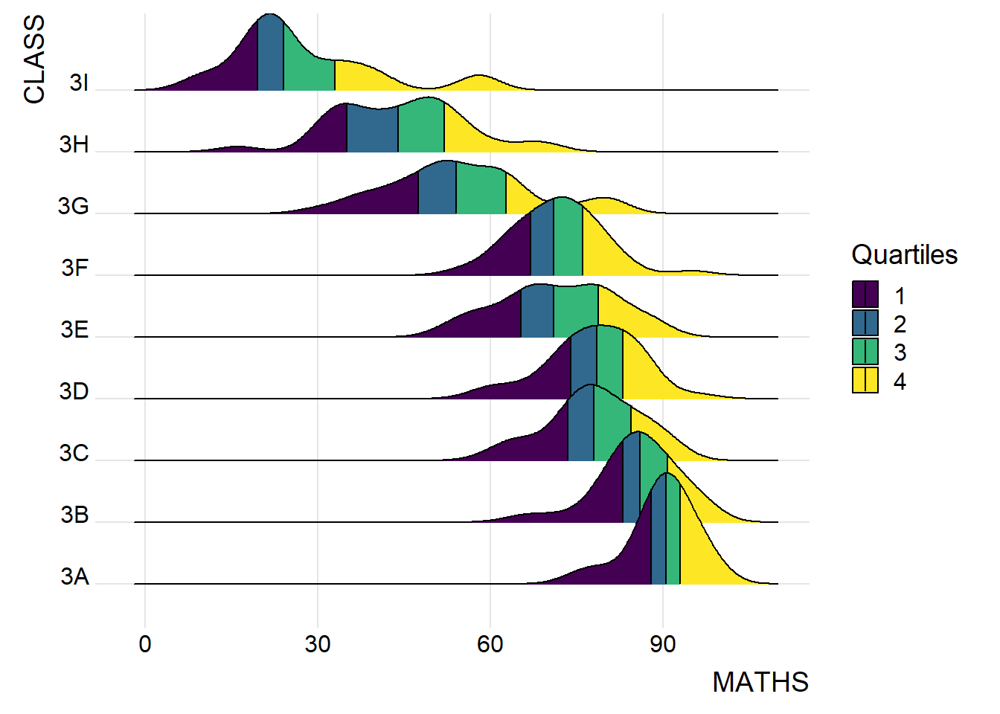
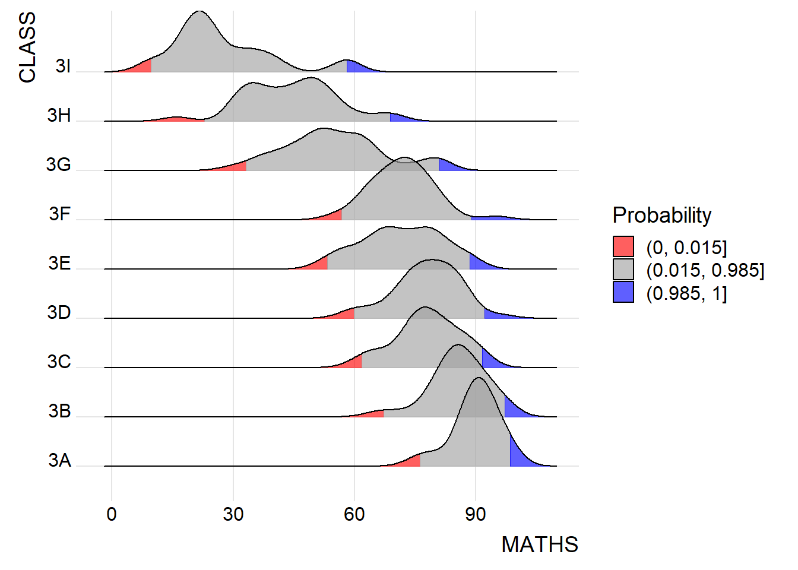

Show code
pacman::p_load(ggdist, ggridges, ggthemes,
colorspace, tidyverse)Visualising Distribution
This hands-on exercise 4 is split into four segments:
Visualising Distribution
Visual Statistical Analysis
Visualising Uncertainty
Building Funnel Plot with R
For the purpose of this exercise, the following R packages will be used, they are:
tidyverse, a family of R packages for data MATHS process,
ggridges, a ggplot2 extension specially designed for plotting ridgeline plots, and
ggdist for visualising distribution and uncertainty.
pacman::p_load(ggdist, ggridges, ggthemes,
colorspace, tidyverse)exam <- read_csv("data/Exam_data.csv")summary(exam) ID CLASS GENDER RACE
Length:322 Length:322 Length:322 Length:322
Class :character Class :character Class :character Class :character
Mode :character Mode :character Mode :character Mode :character
ENGLISH MATHS SCIENCE
Min. :21.00 Min. : 9.00 Min. :15.00
1st Qu.:59.00 1st Qu.:58.00 1st Qu.:49.25
Median :70.00 Median :74.00 Median :65.00
Mean :67.18 Mean :69.33 Mean :61.16
3rd Qu.:78.00 3rd Qu.:85.00 3rd Qu.:74.75
Max. :96.00 Max. :99.00 Max. :96.00 Ridgeline plot (aka Joyplot) is a data visualisation technique used to show the distribution of a numeric value for several groups. Distribution can be represented using histograms or density plots, all aligned to the same horizontal scale and presented with a slight overlap.
ggridges package provides two main geom to plot gridgeline plots, they are: geom_ridgeline() and geom_density_ridges(). The former takes height values directly to draw the ridgelines, and the latter first estimates data densities and then draws those using ridgelines.
The ridgeline plot below is plotted by using geom_density_ridges().
ggplot(exam,
aes(x = MATHS,
y = CLASS)) +
geom_density_ridges(
scale = 3,
rel_min_height = 0.01,
bandwidth = 3.4,
fill = lighten("#7097BB", .3),
color = "white"
) +
scale_x_continuous(
name = "MATHS grades",
expand = c(0, 0)
) +
scale_y_discrete(name = NULL, expand = expansion(add = c(0.2, 2.6))) +
theme_ridges()
A ridgelines plot shows the distribution of MATHS score by class.
To show varying colour (instead of solid colour), use either geom_ridgeline_gradient() or geom_density_ridges_gradient().
ggplot(exam,
aes(x = MATHS,
y = CLASS,
fill = stat(x))) +
geom_density_ridges_gradient(
scale = 3,
rel_min_height = 0.01) +
scale_fill_viridis_c(name = "Temp. [F]",
option = "C") +
scale_x_continuous(
name = "MATHS grades",
expand = c(0, 0)
) +
scale_y_discrete(name = NULL, expand = expansion(add = c(0.2, 2.6))) +
theme_ridges()
ggridges package also provides a stat function called stat_density_ridges() that replaces stat_density() of ggplot2.
Figure below is plotted by mapping the probabilities calculated by using stat(ecdf) which represent the empirical cumulative density function for the distribution of MATHS score.
NOTE: It is important include the argument calc_ecdf = TRUE in stat_density_ridges().
ggplot(exam,
aes(x = MATHS,
y = CLASS,
fill = 0.5 - abs(0.5-stat(ecdf)))) +
stat_density_ridges(geom = "density_ridges_gradient",
calc_ecdf = TRUE) +
scale_fill_viridis_c(name = "Tail probability",
direction = -1) +
theme_ridges()
Use geom_density_ridges_gradient() to colour the ridgeline plot by quantile, via the calculated stat(quantile) aesthetic.
ggplot(exam,
aes(x = MATHS,
y = CLASS,
fill = factor(stat(quantile))
)) +
stat_density_ridges(
geom = "density_ridges_gradient",
calc_ecdf = TRUE,
quantiles = 4,
quantile_lines = TRUE) +
scale_fill_viridis_d(name = "Quartiles") +
theme_ridges()
Instead of using number to define the quantiles, we can also specify quantiles by cut points such as 1.5% and 98.5% tails to colour the ridgeline plot as shown in the figure below.
ggplot(exam,
aes(x = MATHS,
y = CLASS,
fill = factor(stat(quantile))
)) +
stat_density_ridges(
geom = "density_ridges_gradient",
calc_ecdf = TRUE,
quantiles = c(0.015, 0.985)
) +
scale_fill_manual(
name = "Probability",
values = c("#FF0000A0", "#A0A0A0A0", "#0000FFA0"),
labels = c("(0, 0.015]", "(0.015, 0.985]", "(0.985, 1]")
) +
theme_ridges()
Raincloud Plot is a data visualisation techniques that produces a half-density to a distribution plot. The raincloud (half-density) plot enhances the traditional box-plot by highlighting multiple modalities (an indicator that groups may exist). The boxplot does not show where densities are clustered, but the raincloud plot does.
Plot a Half-Eye graph by using stat_halfeye() of ggdist package. The plot contains a half-density and a slab-interval (half-eye visualisation).
ggplot(exam,
aes(x = RACE,
y = ENGLISH)) +
stat_halfeye(adjust = 0.5,
justification = -0.2,
.width = 0,
point_colour = NA)
Remove the slab interval by setting .width = 0 and point_colour = NA.
Add the second geometry layer using geom_boxplot() of ggplot2 which produces a narrow boxplot. Here, we reduce the width and adjust the opacity.
ggplot(exam,
aes(x = RACE,
y = ENGLISH)) +
stat_halfeye(adjust = 0.5,
justification = -0.2,
.width = 0,
point_colour = NA) +
geom_boxplot(width = .20,
outlier.shape = NA)
Add the third geometry layer using stat_dots() of ggdist package which produces a half-dotplot. This plot is similar to a histogram that indicates the number of samples (number of dots) in each bin. Here, we select side = “left” to indicate we want it on the left-hand side.
ggplot(exam,
aes(x = RACE,
y = ENGLISH)) +
stat_halfeye(adjust = 0.5,
justification = -0.2,
.width = 0,
point_colour = NA) +
geom_boxplot(width = .20,
outlier.shape = NA) +
stat_dots(side = "left",
justification = 1.2,
binwidth = .5,
dotsize = 2)
Lastly, coord_flip() of ggplot2 package will be used to flip the raincloud chart horizontally to give it the raincloud appearance. At the same time, theme_economist() of ggthemes package is used to give the raincloud chart a professional publishing standard look.
ggplot(exam,
aes(x = RACE,
y = ENGLISH)) +
stat_halfeye(adjust = 0.5,
justification = -0.2,
.width = 0,
point_colour = NA) +
geom_boxplot(width = .20,
outlier.shape = NA) +
stat_dots(side = "left",
justification = 1.2,
binwidth = .5,
dotsize = 1.5) +
coord_flip() +
theme_economist()